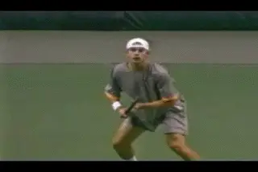
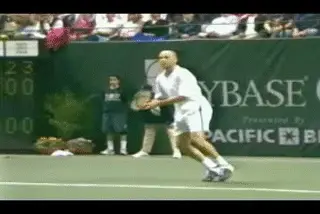
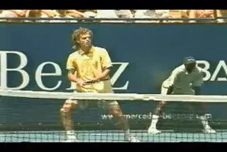
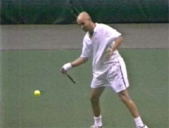
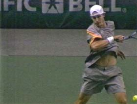

Building the Modern Forehand-Differences Across the Grip Styles¶
Building the Modern Forehand:
Differences Across the Grip Styles
John Yandell
To state the obvious about the modern forehand: the wide variety of grips, backswings, swing patterns, ball heights, spins, and shot placements make trying to identify, understand, and develop the fundamental elements exceedingly confusing, difficult and complex.
If you talk to knowledgeable coaches and successful teaching pros, you'll hear a wide variety of emphasis and opinion, and even directly contradictory viewpoints.
This is in part because of the speed of the swings and the limits of human perception. But it is also due to the great diversity in style between players, as well as the different variations the same players use to do different things with the ball in different circumstances.
How do we, as students of the game, identify and distinguish the basic elements from variations dictated by grips, court position, tactics, shot choices, etc? Put another way-how do you build your own forehand, incorporating the fundamentals that underlie world class shot making, in a way that is appropriate and effective for your grip style, at your level?

Given the diversity of grips and complexity of technical styles, how do we tell what is basic and what is a variation?
The underlying difficulty is that tennis happens too fast for the human eye. Simple observation will never settle the technical disputes between various players and coaches over what they think happens on the forehand, or any stroke for that matter.
This is because the eye needs an event that lasts a minimum of 1/8 of second to resolve a clear image. Unfortunately the contact with the ball is far too fast, lasting only 1/250 of a second. That's about 30 times too fast for the human eye to see clearly.

Is it possible to understand the game or teach it responsibly without using video analysis?
[Because of the limits of human perception, in a literal sense we are all playing and/or teaching an invisible game. For this reason, the opinions of most players and coaches are just that, opinions.] They may be correct opinions or they may be incorrect opinions. Certainly there are plenty of both available if you are willing to listen. But they are all opinions nonetheless.
Currently, the only real way we have to put all the opinions to the test is with high speed video, video filmed with fast shutters and/or fast frame rates. This allows us to verify, reject, and/or modify our beliefs by comparing what we think we see to what actually happens in the strokes.
A well known high performance coach I know feels that it is irresponsible and even immoral to teach technique to competitive junior players without video analysis. Without video, he believes, coaches are forcing players to submit to unverified opinions that may have a severe long term detrimental impact upon their development and competitive success.
That may sound harsh, but one fact can't really be disputed. That is how powerful and effective the process of video analysis and feedback is for players at all levels. Having a coach describe what you are doing, (or should be doing), and actually seeing what you are doing (or not doing) are just not the same process.
Even if a player has been receiving information from a coach that is absolutely valid and correct, when he actually sees himself compared to a pro model, it almost always increases his ability to connect to that input and be able to translate theory into practice.
This is why the high speed footage developed by Advanced Tennis can contribute to how we understand and teach the game. The advantage of the Advanced Tennis high speed footage is that it is recorded at 250 frames per second, versus traditional video which films at 30 frames.
At 250 frames you get the contact and the key frames around the contact on every ball. You get a more detailed look at every aspect of the stroke. This extra information is extremely valuable in trying to sort out the complex and controversial issues that abound regarding the modern forehand, and every other stroke for that matter. This unique footage is the basis for this series on the modern forehand (and in upcoming series on the other strokes as well.)

Can you recognize the three critical elements that vary across the grip styles?
Eventually we will be able to make accurate quantitative measurements of the top players that will give us better answers to many of our questions. (For more on the state of quantitative studies in tennis, check out our new section on Bio-Mechanics. Click here.) In the meantime, we can use the video to try to describe what is happening as accurately as possible.
In the first article we tried to find the common denominators across the grip styles with elements including the unit turn, the hitting arm position, the role of the wrist, the finish, and the wrap. (Click here for Part 1)
In the second article, we took a detailed look at the range of backswings in pro tennis. We saw that the sizes and shapes varied wildly and were seemingly unrelated to the differences in the grips.
But again we did find some bottom line commonalities. These included certain limits on the size of the backswing motion, and the common hitting arm position that all players find just before the racket starts forward to the ball. link
Now in this article let's move from the commonalities to the differences. Despite everything top players have in common, there are obvious, critical technical differences in their forehands, and these differences are a source of much of the contradiction and confusion in coaching and teaching.
The Forward Swing
The main variations in the forehand are related to how the grip affects the forward swing-the movement of the racket forward to the ball from the bottom of the backswing to the contact and the finish, and finally to the wrap. To understand theses differences across the grip styles we need to address three critical factors in the forward swing pattern:
-
The angle of the racket face
-
The rotation of the shoulders
-
The rotation of the hand and arm
As we move across the grips we see that the more extreme (or further underneath) the grip, the more extreme these differences seem to become.
![A person playing tennis Description automatically generated with medium

FACTOR ONE: Rackect Face Angle FACTOR TWO: Shoulder Rotation
FACTOR THREE: Hand and Arm RotationBefore we start, I want to note that I have found (at least) one possible exception to some of the following analysis: Roger Federer. His forehand seems to defy many of the distinctions which separate the other top players.
In general I think Federer's forehand has been widely misunderstood, starting with his grip, which is commonly described as "semi-western." In fact Federer uses a very conservative grip, one that appears to be closer to that of Sampras and Andre Agassi than any of the extreme players. (More on this later.)
What confuses people is that Federer combines this conservative grip structure with the swing shape of a much more extreme forehand. Hence people assume he must have a more extreme grip as well.
In reality, Federer's forehand may be some new hybrid of the classical and the extreme style. Is it just an exception, or is it a possible advance that may be the technical the wave of the future? We'll consider those questions in a future article.
But let's start in the next 3 articles by examining the factors that separate the majority of the classical from the extreme players. Again these are: the angle of the racket face, the shoulder rotation, and the hand and arm rotation. Then we'll examine the variations on running forehands, short balls and angled shots. We'll do this by taking a detailed look at the forehands of some pretty good players, including Andre Agassi, Pete Sampras, Andy Roddick, Gustavo Kuerten, and Lleyton Hewitt.

John Yandell is widely acknowledged as one of the leading videographers and students of the modern game of professional tennis. His high speed filming for Advanced Tennis and TPA have provided new visual resources that have changed the way the game is studied and understood by both players and coaches. He has done personal video analysis for hundreds of high level competitive players, including Justine Henin-Hardenne, Taylor Dent and John McEnroe, among others.
In addition to his role as Editor of TPA he is the author of the critically acclaimed book Visual Tennis. The John Yandell Tennis School is located in San Francisco, California.